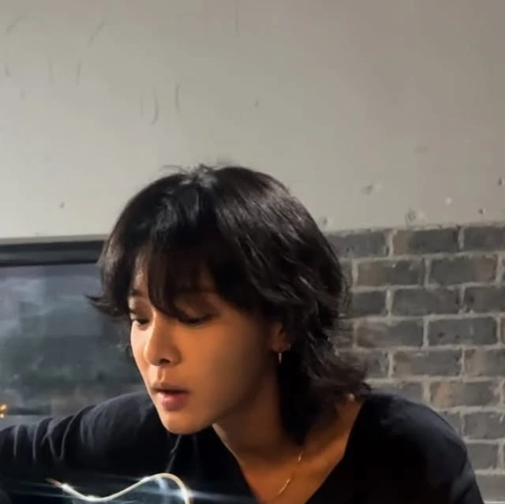

AN ONGOING COLLECTION / 影像实验档案
MUSE
不止一张照片。
也不止一种观看方式。
以薛仁雅的公开生活影像为素材，尝试将照片转化为可探索的数字艺术作品。
01 — PRESENTCURRENT EXHIBITION
01 / 01
01 ENTER EXHIBITION ↗EXPERIMENT NO. 01
Memory Particles
记忆粒子
将照片转化为具有空间深度的粒子肖像。拖动视角、拨动光点，让影像在聚合与消散之间变化。
MORE EXPERIMENTS WILL FOLLOW
这座影像档案仍在生长。
新的视觉实验会在完成后收录于此。当前展览不会限制未来的展览形式。